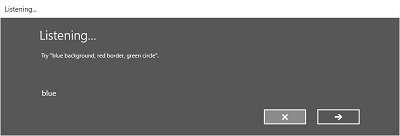
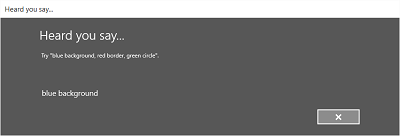

Speech interactions
Integrate speech recognition and text-to-speech (also known as TTS, or speech synthesis) directly into the user experience of your app.
Speech recognition Speech recognition converts words spoken by the user into text for form input, for text dictation, to specify an action or command, and to accomplish tasks. Both pre-defined grammars for free-text dictation and web search, and custom grammars authored using Speech Recognition Grammar Specification (SRGS) Version 1.0 are supported.
TTS TTS uses a speech synthesis engine (voice) to convert a text string into spoken words. The input string can be either basic, unadorned text or more complex Speech Synthesis Markup Language (SSML). SSML provides a standard way to control characteristics of speech output, such as pronunciation, volume, pitch, rate or speed, and emphasis.
Other speech-related components: Cortana in Windows applications uses customized voice commands (spoken or typed) to launch your app to the foreground (the app takes focus, just as if it was launched from the Start menu) or activate as a background service (Cortana retains focus but provides results from the app). See Cortana interactions in Windows apps.
Speech interaction design
Designed and implemented thoughtfully, speech can be a robust and enjoyable way for people to interact with your app, complementing, or even replacing, keyboard, mouse, touch, and gestures.
These guidelines and recommendations describe how to best integrate both speech recognition and TTS into the interaction experience of your app.
If you are considering supporting speech interactions in your app:
- What actions can be taken through speech? Can a user navigate between pages, invoke commands, or enter data as text fields, brief notes, or long messages?
- Is speech input a good option for completing a task?
- How does a user know when speech input is available?
- Is the app always listening, or does the user need to take an action for the app to enter listening mode?
- What phrases initiate an action or behavior? Do the phrases and actions need to be enumerated on screen?
- Are prompt, confirmation, and disambiguation screens or TTS required?
- What is the interaction dialog between app and user?
- Is a custom or constrained vocabulary required (such as medicine, science, or locale) for the context of your app?
- Is network connectivity required?
Text input
Speech for text input can range from short form (single word or phrase) to long form (continuous dictation). Short form input must be less than 10 seconds in length, while long form input session can be up to two minutes in length. (Long form input can be restarted without user intervention to give the impression of continuous dictation.)
You should provide a visual cue to indicate that speech recognition is supported and available to the user and whether the user needs to turn it on. For example, a command bar button with a microphone glyph (see Command bars) can be used to show both availability and state.
Provide ongoing recognition feedback to minimize any apparent lack of response while recognition is being performed.
Let users revise recognition text using keyboard input, disambiguation prompts, suggestions, or additional speech recognition.
Stop recognition if input is detected from a device other than speech recognition, such as touch or keyboard. This probably indicates that the user has moved onto another task, such as correcting the recognition text or interacting with other form fields.
Specify the length of time for which no speech input indicates that recognition is over. Do not automatically restart recognition after this period of time as it typically indicates the user has stopped engaging with your app.
Disable all continuous recognition UI and terminate the recognition session if a network connection is not available. Continuous recognition requires a network connection.
Commanding
Speech input can initiate actions, invoke commands, and accomplish tasks.
If space permits, consider displaying the supported responses for the current app context, with examples of valid input. This reduces the potential responses your app has to process and also eliminates confusion for the user.
Try to frame your questions such that they elicit as specific a response as possible. For example, "What do you want to do today?" is very open ended and would require a very large grammar definition due to how varied the responses could be. Alternatively, "Would you like to play a game or listen to music?" constrains the response to one of two valid answers with a correspondingly small grammar definition. A small grammar is much easier to author and results in much more accurate recognition results.
Request confirmation from the user when speech recognition confidence is low. If the user's intent is unclear, it's better to get clarification than to initiate an unintended action.
You should provide a visual cue to indicate that speech recognition is supported and available to the user and whether the user needs to turn it on. For example, a command bar button with a microphone glyph (see Guidelines for command bars) can be used to show both availability and state.
If the speech recognition switch is typically out of view, consider displaying a state indicator in the content area of the app.
If recognition is initiated by the user, consider using the built-in recognition experience for consistency. The built-in experience includes customizable screens with prompts, examples, disambiguations, confirmations, and errors.
The screens vary depending on the specified constraints:
Pre-defined grammar (dictation or web search)
- The Listening screen.
- The Thinking screen.
- The Heard you say screen or the error screen.
List of words or phrases, or a SRGS grammar file
- The Listening screen.
- The Did you say screen, if what the user said could be interpreted as more than one potential result.
- The Heard you say screen or the error screen.
On the Listening screen you can:
- Customize the heading text.
- Provide example text of what the user can say.
- Specify whether the Heard you say screen is shown.
- Read the recognized string back to the user on the Heard you say screen.
Here is an example of the built-in recognition flow for a speech recognizer that uses a SRGS-defined constraint. In this example, speech recognition is successful.



Always listening
Your app can listen for and recognize speech input as soon as the app is launched, without user intervention.
You should customize the grammar constraints based on the app context. This keeps the speech recognition experience very targeted and relevant to the current task, and minimizes errors.
"What can I say?"
When speech input is enabled, it's important to help users discover what exactly can be understood and what actions can be performed.
If speech recognition is user enabled, consider using the command bar or a menu command to show all words and phrases supported in the current context.
If speech recognition is always on, consider adding the phrase "What can I say?" to every page. When the user says this phrase, display all words and phrases supported in the current context. Using this phrase provides a consistent way for users to discover speech capabilities across the system.
Recognition failures
Speech recognition will fail. Failures happen when audio quality is poor, when only part of a phrase is recognized, or when no input is detected at all.
Handle failure gracefully, help a user understand why recognition failed, and recover.
Your app should inform the user that they weren't understood and that they need to try again.
Consider providing examples of one or more supported phrases. The user is likely to repeat a suggested phrase, which increases recognition success.
You should display a list of potential matches for a user to select from. This can be far more efficient than going through the recognition process again.
You should always support alternative input types, which is especially helpful for handling repeated recognition failures. For example, you could suggest that the user try to use a keyboard, or use touch or a mouse to select from a list of potential matches.
Use the built-in speech recognition experience as it includes screens that inform the user that recognition was not successful and lets the user make another recognition attempt.
Listen for and try to correct issues in the audio input. The speech recognizer can detect issues with the audio quality that might adversely affect speech recognition accuracy. You can use the information provided by the speech recognizer to inform the user of the issue and let them take corrective action, if possible. For example, if the volume setting on the microphone is too low, you can prompt the user to speak louder or turn the volume up.
Constraints
Constraints, or grammars, define the spoken words and phrases that can be matched by the speech recognizer. You can specify one of the pre-defined web service grammars or you can create a custom grammar that is installed with your app.
Predefined grammars
Predefined dictation and web-search grammars provide speech recognition for your app without requiring you to author a grammar. When using these grammars, speech recognition is performed by a remote web service and the results are returned to the device
- The default free-text dictation grammar can recognize most words and phrases that a user can say in a particular language, and is optimized to recognize short phrases. Free-text dictation is useful when you don't want to limit the kinds of things a user can say. Typical uses include creating notes or dictating the content for a message.
- The web-search grammar, like a dictation grammar, contains a large number of words and phrases that a user might say. However, it is optimized to recognize terms that people typically use when searching the web.
Note
Because predefined dictation and web-search grammars can be large, and because they are online (not on the device), performance might not be as fast as with a custom grammar installed on the device.
These predefined grammars can be used to recognize up to 10 seconds of speech input and require no authoring effort on your part. However, they do require connection to a network.
Custom grammars
A custom grammar is designed and authored by you and is installed with your app. Speech recognition using a custom constraint is performed on the device.
Programmatic list constraints provide a lightweight approach to creating simple grammars using a list of words or phrases. A list constraint works well for recognizing short, distinct phrases. Explicitly specifying all words in a grammar also improves recognition accuracy, as the speech recognition engine must only process speech to confirm a match. The list can also be programmatically updated.
An SRGS grammar is a static document that, unlike a programmatic list constraint, uses the XML format defined by the SRGS Version 1.0. An SRGS grammar provides the greatest control over the speech recognition experience by letting you capture multiple semantic meanings in a single recognition.
Here are some tips for authoring SRGS grammars:
- Keep each grammar small. Grammars that contain fewer phrases tend to provide more accurate recognition than larger grammars that contain many phrases. It's better to have several smaller grammars for specific scenarios than to have a single grammar for your entire app.
- Let users know what to say for each app context and enable and disable grammars as needed.
- Design each grammar so users can speak a command in a variety of ways. For example, you can use the GARBAGE rule to match speech input that your grammar does not define. This lets users speak additional words that have no meaning to your app. For example, "give me", "and", "uh", "maybe", and so on.
- Use the sapi:subset element to help match speech input. This is a Microsoft extension to the SRGS specification to help match partial phrases.
- Try to avoid defining phrases in your grammar that contain only one syllable. Recognition tends to be more accurate for phrases containing two or more syllables.
- Avoid using phrases that sound similar. For example, phrases such as "hello", "bellow", and "fellow" can confuse the recognition engine and result in poor recognition accuracy.
Note
Which type of constraint type you use depends on the complexity of the recognition experience you want to create. Any could be the best choice for a specific recognition task, and you might find uses for all types of constraints in your app.
Custom pronunciations
If your app contains specialized vocabulary with unusual or fictional words, or words with uncommon pronunciations, you might be able to improve recognition performance for those words by defining custom pronunciations.
For a small list of words and phrases, or a list of infrequently used words and phrases, you can create custom pronunciations in a SRGS grammar. See token Element for more info.
For larger lists of words and phrases, or frequently used words and phrases, you can create separate pronunciation lexicon documents. See About Lexicons and Phonetic Alphabets for more info.
Testing
Test speech recognition accuracy and any supporting UI with your app's target audience. This is the best way to determine the effectiveness of the speech interaction experience in your app. For example, are users getting poor recognition results because your app isn't listening for a common phrase?
Either modify the grammar to support this phrase or provide users with a list of supported phrases. If you already provide the list of supported phrases, ensure it is easily discoverable.
Text-to-speech (TTS)
TTS generates speech output from plain text or SSML.
Try to design prompts that are polite and encouraging.
Consider whether you should read long strings of text. It's one thing to listen to a text message, but quite another to listen to a long list of search results that are difficult to remember.
You should provide media controls to let users pause, or stop, TTS.
You should listen to all TTS strings to ensure they are intelligible and sound natural.
- Stringing together an unusual sequence of words or speaking part numbers or punctuation might cause a phrase to become unintelligible.
- Speech can sound unnatural when the prosody or cadence is different from how a native speaker would say a phrase.
Both issues can be addressed by using SSML instead of plain text as input to the speech synthesizer. For more info about SSML, see Use SSML to Control Synthesized Speech and Speech Synthesis Markup Language Reference.
Other articles in this section
| Topic | Description |
|---|---|
| Speech recognition | Use speech recognition to provide input, specify an action or command, and accomplish tasks. |
| Specify the speech recognizer language | Learn how to select an installed language to use for speech recognition. |
| Define custom recognition constraints | Learn how to define and use custom constraints for speech recognition. |
| Enable continuous dictation | Learn how to capture and recognize long-form, continuous dictation speech input. |
| Manage issues with audio input | Learn how to manage issues with speech-recognition accuracy caused by audio-input quality. |
| Set speech recognition timeouts | Set how long a speech recognizer ignores silence or unrecognizable sounds (babble) and continues listening for speech input. |
Related articles
Samples